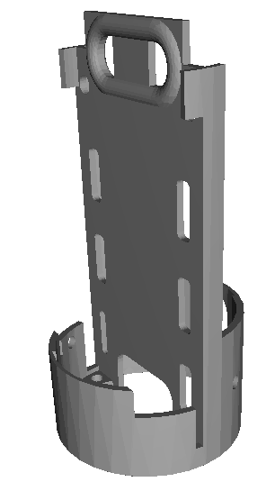
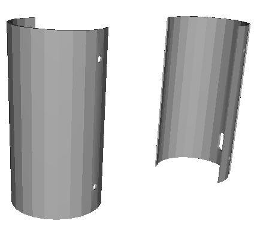
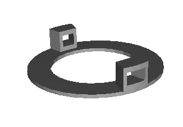
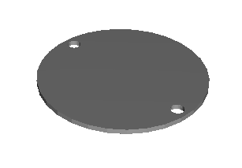

La estructura 3D del emisor CANSAT (satélite) de la propuesta de democratizando Cansat, está basada en el diseño realizado por David Morales Arellano miembro del equipo VegaSteam del IES Federico García Lorca de Churriana de la Vega (Granada).
Ha sido diseñada para un fácil ensamblaje y cambio de componentes electrónicos en su interior, y consta de tres partes bien diferenciadas:
| Pieza | Imagen |
|
Bahía electrónica Sirve para alojar el dispositivo lora y la electrónica asociada |
 |
|
Fuselaje o tapas exteriores Cerramiento perimetral del CANSAT |
 |
|
Tapas superior e inferior |
  |